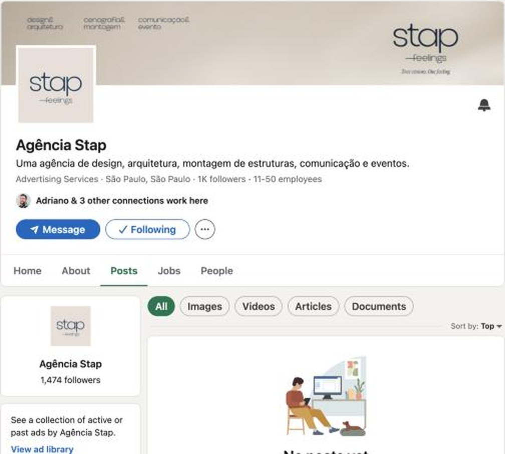
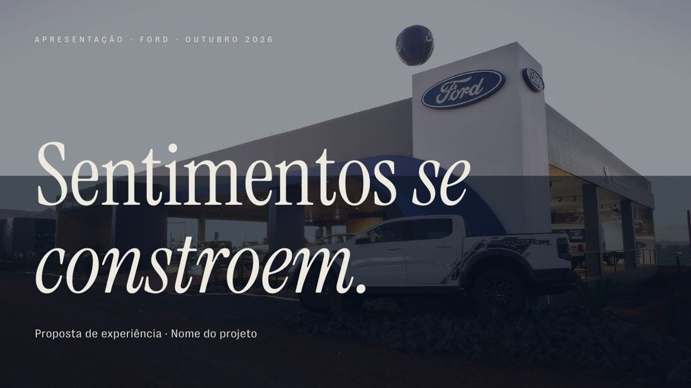
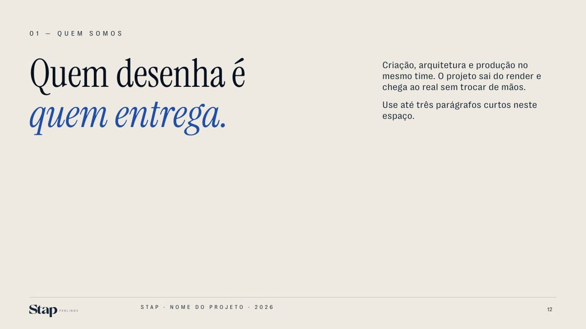
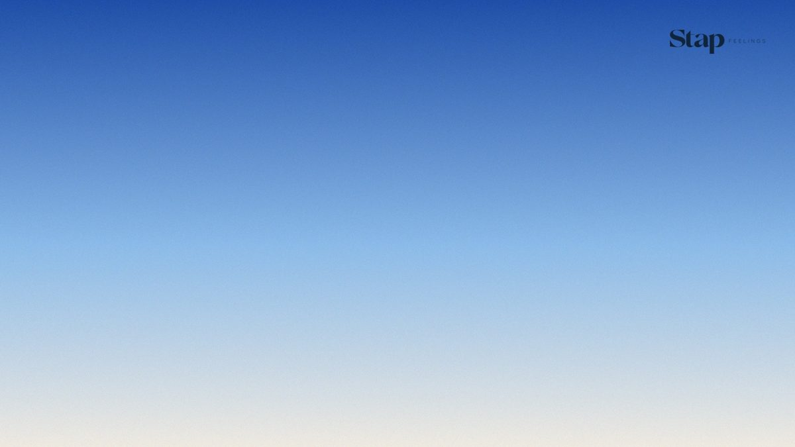

Outubro 2026
Statement
Posicionamento, marca e peças

01
A Stap hoje.
Onde a marca aparece hoje: site, apresentação comercial, Instagram e LinkedIn.
O site é bonito. Mas não trabalha para a venda.

SEO
Se o Google entende e mostra o site.
Desempenho
Quanto o site demora a abrir no celular.
Boas práticas
Segurança e código atualizado.
Acessibilidade
Se qualquer pessoa consegue ler e navegar.
Notas do Google de 0 a 100. Abaixo de 50 é ruim, de 50 a 89 precisa melhorar, 90 ou mais é bom. O Google usa essas notas para decidir quem aparece primeiro na busca.
Não é encontrado
A página está bloqueada para indexação e não tem metadescrição. O título na busca é “Home | Stap Feeling 1”.
Demora no celular
A maior imagem leva 7,2 s para aparecer em 4G. São 3,7 MB por visita e 475 KB de JavaScript sem uso.
Não mostra projeto
A home abre com imagem de banco e colagens. Os cases ficam atrás de um clique, sem render × real e sem dado.
Limite da ferramenta
No Wix, cada case novo é montado à mão em banners. Atualizar dá trabalho, então o site fica parado.
PageSpeed Insights · celular · 02/nov/2026
Onde o site perde o cliente.
Buscar
“Estande Agrishow”, “agência agro”. O Google não lista a página: está bloqueada.
Chegar
Só chega quem já conhece: pelo link da bio ou de um e-mail.
Esperar
7,2 s até a imagem principal no celular. Boa parte desiste antes.
Ver prova
A home fala de emoção e mostra banco de imagem, não projeto entregue.
Contatar
Formulário existe, mas pouca gente chega até aqui.
Hoje o site é um cartão de visita. Precisa virar a vitrine de prova da Stap.
A apresentação comercial é o calcanhar de Aquiles.
Onde estão os 209 MB da versão “pocket”
99 slides · 288 imagens · 37 fontes embutidas
4 GB
a versão completa, com vídeos. Não vai por e-mail, trava no WhatsApp, demora a abrir.
209 → 28
MB, só redimensionando as fotos para o tamanho da tela. Testamos: sem perda visível.
42
palavras por slide, em média. É documento, não apresentação.
Análise do arquivo stap_apresentacao_final_v1_pocket · 02/nov/2026
Do vendedor ao cliente, a apresentação se perde no caminho.
Vendedor envia
Cada um tem uma versão salva. Ninguém sabe qual é a última.
Gmail e Outlook barram anexos acima de 20 a 25 MB.
Cliente abre
No celular, o PPT de 4 GB não abre. No notebook, demora.
Repassa
Para compras ou diretoria? Não cabe no e-mail de novo.
Retorno
Abriu? Viu o quê? A Stap não sabe.
O problema não é o peso. É ser um arquivo. Cada envio é uma chance de o cliente desistir antes de ver o trabalho.
Hoje: um arquivo que pesa, se desatualiza e some na caixa do cliente.
Caminho: o deck vira um link. Abre em qualquer tela, está sempre na última versão e é atualizado num lugar só.
O Instagram é um bom portfólio. Mas é só portfólio.
@stapfeelings · cada ponto é um post (os 12 mais recentes)

Sintoma
Só cases e KVs de eventos, em blocos de três para fechar o mosaico. Depois, meses sem nada.
Causa
O perfil só trabalha portfólio. Faltam pílulas que não dependem de um job terminar: bastidor, gente, processo, opinião. Isso pede calendário e alguém dedicado a criar, editar e publicar.
Impacto
Quando não tem case novo, não tem post. O algoritmo entrega menos a quem some, e os 4,8 mil seguidores esquecem.
Portfólio mostra o que a Stap fez. Conteúdo mostra quem a Stap é.
@stapfeelings · datas pelos posts · 02/nov/2026
O LinkedIn é uma porta fechada.

1.474
seguidores que a Stap já tem e não usa: a página tem zero posts.
Desalinhada
Na busca, “agência de live marketing”. Na página, “design, arquitetura, montagem”. Logo e capa antigos.
O que já existe
Gente da Stap com perfil ativo e rede própria. É o canal onde estão os compradores de Agro e Auto, e ninguém da casa fala por ele em nome da empresa.
Impacto
Quem pesquisa a Stap antes de uma concorrência encontra uma página vazia. Para compras, isso é sinal de risco.
É onde estão os compradores de Agro e Auto. E é onde a Stap está em silêncio. A partir daqui: página atualizada, posts semanais e pessoas da Stap falando pela empresa.
linkedin.com/company/agenciastap · 02/nov/2026
A Stap hoje, em um quadro.
A Stap tem material e audiência. Falta um sistema que faça os canais trabalharem juntos.
02
O mercado.
Oito agências lidas nas próprias fontes: o que dizem, o que mostram e com que constância aparecem nas redes.
Oito sites, quase a mesma promessa.

TM1

Netza

Hype

Innova AATB

Grupo Speed

BFerraz · referência

Red Door · referência

Rock · referência
Primeira tela de cada site · 18/out/2026
Todos prometem a mesma emoção.
O que todo mundo diz não diferencia ninguém. E a Stap também falava assim.
No Instagram, todas mostram o evento pronto.

1.227 posts

1.411 posts

181 posts

291 posts

45 posts

328 posts

448 posts

401 posts
Últimos 12 posts e total de posts de cada perfil · 27/out/2026 · @stapfeelings: 47 posts
Por que todas mostram o evento pronto?
O job termina com um aftermovie que já foi feito para o cliente.
É o conteúdo mais fácil: pronto, aprovado e bonito.
Não pede produção nova: a agência só publica.
Resultado: oito feeds iguais. O protagonista é o cliente, não a agência.
O evento pronto mostra o quê. Não mostra como, nem quem fez. Para quem vai contratar, é a parte que menos ajuda a escolher.
No LinkedIn, audiência e ritmo quase nunca andam juntos.
Audiência parada: BFerraz e Netza têm 26 mil e 9 mil seguidores e não postam há meses.
Ritmo sem alcance: a Speed posta toda semana sobre Auto e Agro para 548 pessoas.
Página de RH: na Innova, 18 de 29 posts são vagas.
As duas coisas: só a TM1, puxada pelo CEO em painéis e na imprensa.
Seguidor sem post é audiência parada. Post sem marca não chega a ninguém. Só cresce quem junta os dois, com pessoas falando pela empresa.
Páginas de empresa no LinkedIn · 02/nov/2026 · com 8 agências, é observação, não correlação
Como cada agência conta um projeto.
Lemos os cases nos sites e os últimos 12 posts de cada perfil, e marcamos que etapa da história cada uma mostra.
Quem prova é generalista. Quem é especialista só emociona.
→ Horizontal: do discurso de emoção à prova (cases com números, resultado).
↑ Vertical: de quem atende qualquer setor a quem tem especialidade por setor.
A Stap já é especialista: hubs de Agro e de Auto, 34 anos de carteira. Mas fala de emoção como todas.
Especialista em Agro e Auto que prova a entrega: esse canto está vazio.
● Stap
Agro e Auto, com prova
Netza e Innova provam escala: área, público, metragem · out/2026
Três objetivos, tirados do diagnóstico.
Ser encontrada
Site · busca · LinkedIn
Hoje: site bloqueado no Google e LinkedIn vazio. Quem procura a Stap antes de uma concorrência não acha nada.
Ser lembrada
Instagram · LinkedIn
Hoje: blocos de três posts e meses de silêncio. No mercado, quase ninguém tem constância, e quem tiver se destaca.
Ser escolhida
Deck · site · cases
Hoje: deck que não abre e site sem prova. Nenhuma agência mostra o aprovado ao lado do entregue.
E por trás dos três, uma base: a cultura de quem faz a Stap.
A base
Parceiros de negócio, não só funcionários.
Dono
Tratar a Stap como o próprio negócio e melhorar o que encontrar pelo caminho, em qualquer nível.
Time
Aptidões, repertórios e experiências diferentes somados. Sozinho ninguém entrega um estande.
Engajamento
Propor em vez de reclamar. Fazer em vez de esperar que outro faça.
Sentimentos se constroem por dentro também. A marca só se sustenta se a cultura for a mesma.
Agora, a Stap muda de casca.
Daqui em diante, a linguagem nova
Como chegamos lá
Para ocupar o canto da prova, a Stap muda por dentro e por fora.
O que dizemos
Posicionamento e statement. Da emoção prometida para a emoção construída e provada.
Como dizemos
Tom de voz. Fato e emoção na mesma frase; prova no lugar do adjetivo.
Como aparecemos
Identidade visual. Uma casca à altura do que a Stap entrega.
Como a Stap chega lá?
O que ouvimos
O mercado vende emoção.
O cliente compra segurança.
“Os clientes escolhem a Stap pela criatividade e pela segurança de entrega.”
Criatividade abre a porta. Segurança fecha o contrato. E quem decide, muitas vezes, é o departamento de compras.
03
O statement.
O insight que saiu do estudo, a frase e a plataforma que ela organiza.
A crença
“Você não é o que você faz. Você é o que você faz as pessoas sentirem.”
A alma do feelings. Sozinha, vira poesia: qualquer agência poderia dizer. Ao lado da prova, vira argumento.
A prova
O render aprovado ao lado do projeto montado. Em Agro e em Auto.
As agências mostram o evento pronto. A Stap mostra o caminho inteiro: o que o cliente aprovou e o que ele recebeu.
A essência fica. Muda o que a gente afirma.
Antes · posicionamento
Three visions, one feeling.
Continua como crença: é por que a Stap faz o que faz.
→
Agora · posicionamento
Sentimentos se constroem.
Vira o que a Stap afirma e prova: do render ao real.
como ela é feita.
À MONTAGEM
é quem entrega.
Sentimentosse constroem.
Do render ao real · criação, arquitetura e produção integradas, do projeto à montagem.
Manifesto
Sentimentos
se constroem.
Do render ao real: criação, arquitetura e produção integradas, do projeto à montagem.
DO RENDERao real.
O que o cliente aprova no 3D é o que ele encontra no dia. Do traço ao estande montado, com o mesmo time.
Do renderao real.


Render à esquerda · real à direita · arraste o traço
A prova vem com número.
estandes construídos
m² de área construída
montagens simultâneas no Circuito Agro
de caminhão em plataforma elevada · Grunner, Agrishow
A ficha que cada case passa a ter
Aprovado em
data do render
Montado em
dias de obra
Fidelidade
% do render entregue
Área
m²
Público
pessoas
Números institucionais do deck comercial. A ficha por case precisa ser levantada com produção e atendimento.
04
A marca.
Um statement novo pede uma voz à altura.
Uma frase com mais força pede uma marca com mais voz.
Presença
Reconhecível de longe: numa feira, num feed, na capa de uma proposta.
Voz
A assinatura fala com a mesma voz do statement: emoção com firmeza.
Atitude
Mais bold, mais editorial, mais argumento. A marca deixa de ser só um selo.
Fica o nome. Ganha voz.
Até 2026
2026
Fica: o nome, o feelings e o navy. Quem conhece a Stap reconhece.
Muda: o Stap ganha desenho próprio, com presença; o feelings vai para caixa-alta espaçada.
05
O sistema.
Tipografia, cor, degradês e um elemento próprio.
Três vozes. A serifa lidera.
Emoção
Aaa
Instrument Serif · regular e itálica
ABCDEFGHIJKLMNOPQRSTUVWXYZ
abcdefghijklmnopqrstuvwxyz 0123456789
Statement, títulos e frases. A palavra-sentimento em itálico azul.
Impacto
Aa
Tusker Grotesk 3500 Medium
ABCDEFGHIJKLMNOPQRSTUVWXYZ
0123456789 +4.000
Caixa-alta, poucas palavras: números de prova e nomes de cliente.
Leitura
Aa
PPR Text · regular
ABCDEFGHIJKLMNOPQRSTUVWXYZ
abcdefghijklmnopqrstuvwxyz
0123456789
Texto corrido, legendas e etiquetas espaçadas.
Clara e fria, num mercado escuro e quente.
A cor forte de cada peça é a do cliente, nas fotos. A Stap fica clara em volta: base off-white, azuis como luz, navy em momentos pontuais. Os terrosos de apoio (areia, terracota, oliva) vêm da terra: é onde a Stap mais constrói, no Agro.
Degradês: luz, não decoração.
Essenciais · só azuis | Atmosferas · com terrosos
Entram em aberturas, títulos de impacto, motion e posts. Nunca no logo, atrás de texto corrido ou sobre a cor do cliente.
A marca, no dia a dia.


Template de apresentação
Fundo de reuniãoAssinatura de e-mail
ao real.
constrói.
Peças disponíveis no hub de marca
O statement vai para a rua
Sentimentos
se constroem.
Stap · desde 1992